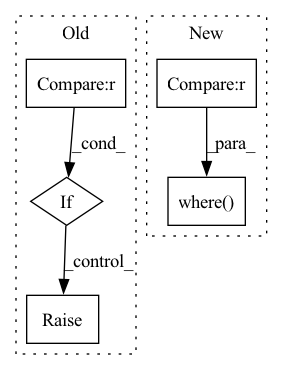

Pattern ID :7416
Before Change
return user_embedding
if self.mode == "item":
return item_embedding
if self.sim_func == "cosine" :
y = torch.cosine_similarity(user_embedding, item_embedding, dim=1)
elif self.sim_func == "dot":
y = torch.mul(user_embedding, item_embedding).sum(dim=1)
else:
raise ValueError("similarity function only support %s, but got %s" % (["cosine", "dot"], self.sim_func))
sample_weight = self.embedding(x, self.sample_weight_feature, squeeze_dim=True).squeeze(1)
After Change
batch_size = user_embedding.shape[0]
index0 = self.index0[:batch_size * (self.n_neg + 1)]
index1 = self.index1[:batch_size * (self.n_neg + 1)]
index0[np.where(index0 >= batch_size ) ] -= batch_size
index1[np.where(index1 >= batch_size)] -= batch_size
scores = scores[index0, index1]In pattern: SUPERPATTERN
Frequency: 4
Non-data size: 5
Instances Fragment ID: 24601319
Project Name: datawhalechina/torch-rechub
Commit Name: d0461152ddffad7a6bf7c7532b7b540094623e95
Time: 2022-06-07
Author: icewwl@163.com
File Name: torch_rechub/models/matching/youtube_sbc.py
M Class Name: YoutubeSBC
N Class Name: YoutubeSBC
M Method Name: forward(2)
N Method Name: forward(2)
M Parent Class: torch.nn.Module
N Parent Class: torch.nn.Module
M File Name: torch_rechub/models/matching/youtube_sbc.py
N File Name: torch_rechub/models/matching/youtube_sbc.py
M Start Line: 55
M End Line: 80
N Start Line: 60
N End Line: 87
Before Change
if reduction == "mean":
func = torch.mean
elif reduction == "sum" :
func = torch.sum
else:
raise ValueError("reduction should in ("mean", "sum")")
if with_logits:
y_pred = torch.sigmoid(y_pred)
y_pred = torch.clamp(y_pred, 1e-6, 1 - 1e-6)After Change
// target == -1. It"s neither a positive sample nor a negative sample.
return torch.sum(
torch.where(target == -1 , torch.tensor(0., device=target.device),
alpha * (1 - pred) ** gamma * target * torch.clamp_max(-torch.log(pred), 100) +
(1 - alpha) * pred ** gamma * (1 - target) * torch.clamp_max(-torch.log(1 - pred), 100)) )
class FocalLoss(nn.Module): Fragment ID: 24601308
Project Name: jintao-huang/efficientdet_pytorch
Commit Name: b140444fc9d402a1206ec4a8d6e0514b82003371
Time: 2021-03-31
Author: hjt_study@qq.com
File Name: models/loss.py
M Class Name: AnonimousClass
N Class Name: AnonimousClass
M Method Name: weighted_binary_focal_loss(4)
N Method Name: weighted_binary_focal_loss(6)
M Parent Class:
N Parent Class:
M File Name: models/loss.py
N File Name: models/loss.py
M Start Line: 9
M End Line: 32
N Start Line: 21
N End Line: 24
Before Change
if min_value > prune_epoch_to_now[i] >= 0:
idx = i
min_value = prune_epoch_to_now[i]
if idx < 0 :
raise Exception("Early stop as there is not any layer to be pruned...")
return idx
After Change
unpruned_layers = list(filter(lambda x: x["epoch"] >= epoch, self.pruning_plan))
unpruned_layers_epoch = np.array(list(map(lambda x: x["epoch"], unpruned_layers)))
prune_epoch_to_now = unpruned_layers_epoch-epoch
soonest_layer_idxes = np.where(prune_epoch_to_now == prune_epoch_to_now.min() ) [0]
soonest_layer_names = list()
for i in soonest_layer_idxes:
soonest_layer_names.append(unpruned_layers[i]["name"]) Fragment ID: 24601324
Project Name: lehduong/knowledge-distillation-by-replacing-cheap-conv
Commit Name: 7308659bcb1aa76bf8ee9ab2f42e88efb85d667c
Time: 2020-02-15
Author: oopsxilitol@gmail.com
File Name: trainer/atakdp.py
M Class Name: ATAKDPTrainer
N Class Name: ATAKDPTrainer
M Method Name: get_index_of_pruned_layer(2)
N Method Name: get_index_of_pruned_layer(2)
M Parent Class: TAKDPTrainer
N Parent Class: TAKDPTrainer
M File Name: trainer/atakdp.py
N File Name: trainer/atakdp.py
M Start Line: 204
M End Line: 213
N Start Line: 216
N End Line: 229
Before Change
tensor([0., 2., 0.])
if input.dtype in {torch.bool, torch.complex64, torch.complex128} :
raise NotImplementedError(
"Boolean, and Complex hypervectors are not supported yet."
)
After Change
if dtype == torch.bool:
if tie is not None:
return torch.where(input == other , input, tie)
else:
return torch.logical_and(input, other)
return torch.add(input, other) Fragment ID: 24601322
Project Name: hyperdimensional-computing/torchhd
Commit Name: 6d2a0fa535d893efdd92dc8ef8b1d0acdd47c55b
Time: 2022-06-01
Author: mikeheddes@gmail.com
File Name: torchhd/functional.py
M Class Name: AnonimousClass
N Class Name: AnonimousClass
M Method Name: bundle(2)
N Method Name: bundle(2)
M Parent Class:
N Parent Class:
M File Name: torchhd/functional.py
N File Name: torchhd/functional.py
M Start Line: 447
M End Line: 452
N Start Line: 457
N End Line: 471